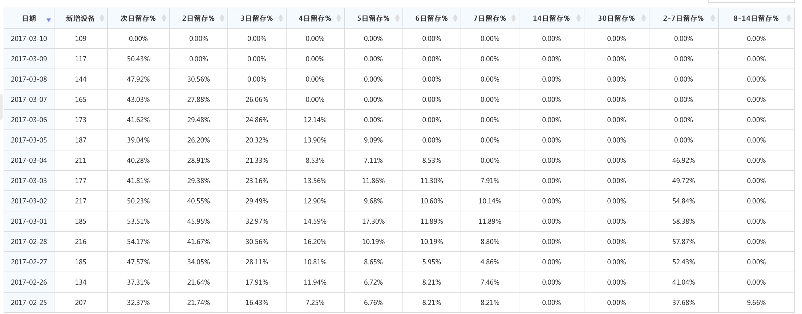

目标
长期目标
持续研发和运营满足用户和市场需求的婚恋交友产品
中期目标
- 通过生态运转建立新产品市场竞争能力（如：提升K值等）；
- 进一步优化组织和流程，为未来多产品和多平台做好准备：
- 加强团队人员的思想教育，提升团队战斗力；
短期目标
- 第一个里程碑：K值（包括成本）追平多名称（4月15日前）；
- 第二个里程碑：K值能超过30%（6月15日前），同时IOS版本追平AD版本。
阶段里程碑
- 3月17日，arpu1 = 1.7， K = 2.2
- 3月31日，arpu1 = 2.5，K = 3.2
- 4月15日 arpu1 = 2.8 ， K = 3.6
业务进展
工作重心主要通过女用户生态产生动态和服务来完成415目标。本周工作主要是红包任务上线 + 稳压器将内容推送给男用户，以调整基础K值，同步开发以『小编问答』、『美丽约会』、『心愿礼物』组件发起的互动套路，服务于317目标。arpu目前单双号测试，arpu1近两日有明显提升。
- 目前，B类女用户生态运营良好，能高效的采集需要的动态素材；
- 商业化框架和组件基础已经搭好，正在开发以交互发起的连接，提升聊天的预期强度和多样性。
- 女用户形象当前目标聚焦在视频认证上：D类视频认证率10%，B类 50%
- 拍拖iOS版本appstore审核通过，可通过iphone手机下载基础版本，但功能上落后AD两个礼拜左右（AD目前迭代周期为2天一版，正常渠道追不上）。
- 建立严格按预算体系运转的业务结构，目前日亏损在7000元
- 整合运营部、商务部资源，协同工作，搭建新产品测试平台，主要是将商业化框架同渠道运营同步；
业务沙盘
主要节奏:
女用户体验总体感觉是不错的，3月主要调整男用户体验和交互节奏，正式进入arpu值调优阶段。
问题：
主要是目前的男用户留存偏低，会集中精力将初始男用户的体验进行突击，只有男用户留存提升arpu才有空间。

数据情况
自然女用户流程情况
目前自然女用户规模基本控制在100-200之间，次留最近冲动50%左右，如无情况异常出现，7天的留存也应该能达到12%左右。动态产出率基本能稳定在25%左右，以保证整体内容大盘。。

K值情况 （目标：3.6）
3月1日到2日，出现男用户刷注册的情况，正常男注册应该在1400左右。
目前老拍拖在应用宝的arpu7大约在3.2左右。

组织进展
优化组织和流程，为未来多产品和多平台做好准备
- 同BP配合机制逐渐形成，在组织管理上，刘博大大分担了我的组织精力。
- 培养年轻干部的『星火计划』，圈定潜在骨干，采用『明确目标+重点辅导+带新人』，已经同本人进行过重点沟通；
- 整体梳理了招人需求，明确用人计划；
- 着手建立开发三部的人员梯队，引导新年建立组织意识，逐步建立起『业务骨干+技术骨干』共同负责业务目标的机制；
新员工及实习生到岗情况：
思明：2个， 丝雨 1个，数据：1个，安庆：2个
加强团队人员的思想教育，提升团队战斗力
- 在部门层面加强了产品价值观的宣传，并时刻强调项目的重要性和紧迫感；
- 给年轻干部更多的独立目标，激活了年轻骨干，团队氛围极大提升；